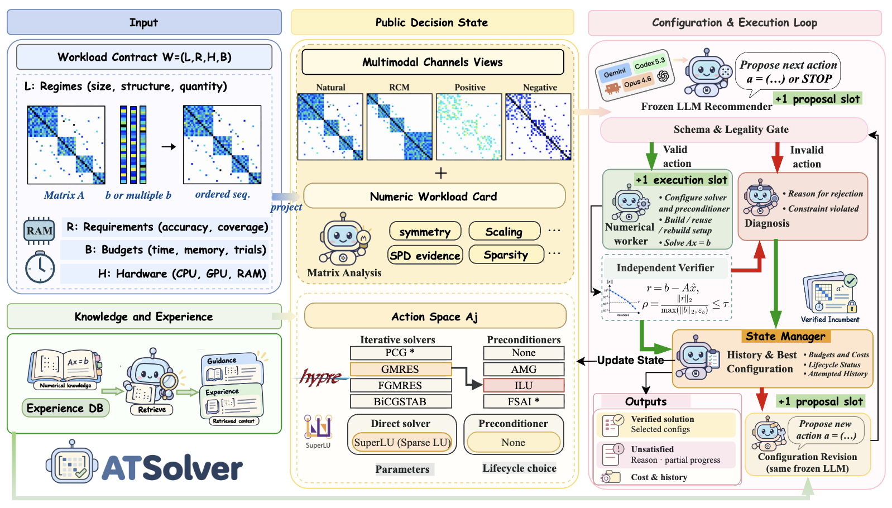

Research
Publications
-

NeurIPS 2026 · Main Track
CONSTRAINER: Promptable Graph-Structured Optimization via Constraint Conditioning
CONSTRAINER is a constraint-conditioned foundation model for graph-structured optimization. An operator-DAG constraint encoder conditions a heterogeneous graph transformer through cross-attention. It transfers zero-shot to DC optimal power flow and reaches 99.02% feasibility.
Conference Manuscripts
-

Under review · ICLR 2027
ATSolver: Agentic Tuning of Sparse Linear Solvers with Numerical Feedback
ATSolver is a verifier-grounded LLM agent that tunes sparse linear solvers from numerical feedback, through a gated propose, execute, diagnose, and repair loop. On 35 matrices, it beats matched-budget Best-of-6 (75/105 vs. 64/105 accepted) with 30.1% less solve time.
-

Under review · AAAI 2027
MobilityWorld: Learning a Structured World Model for Human Mobility via Latent State-Action Dynamics
MobilityWorld is a structured world model for human mobility built on latent state-action dynamics.
-

Under review · AAAI 2027
StayBERT: Staypoint Detection as the Pretext Task for Trajectory Foundation Models
StayBERT uses staypoint detection as the pretext task for pretraining trajectory foundation models. A gated motion-place encoder feeds a CRF decoder trained with dwell-structured objectives. Geo-conditioned test-time self-training then adapts the model to new cities without labels.
* Equal contribution
Journal Manuscripts
-
Emory NSF REU
Structured MAGI with Warm Starts for Partially Observed Bayesian ODE Inverse Problems
Structured MAGI targets Bayesian ODE inverse problems with partially observed systems. Multi-task GPs denoise the data, a physics-informed network supplies initial estimates, and these warm-start MAGI’s HMC sampling for parameters and trajectories with uncertainty estimates.
-
Under review · IEEE Journal of ICHI
Spatiotemporal Evidence Grounding for Vision–Language Parkinson Gait Assessment
The model scores Parkinson’s gait severity (UPDRS-gait) from 3D body motion and grounds each prediction in biomechanical evidence. Thirteen concepts modulate frozen motion tokens, pooling merges clips and views, and joint concept regression keeps predictions interpretable.